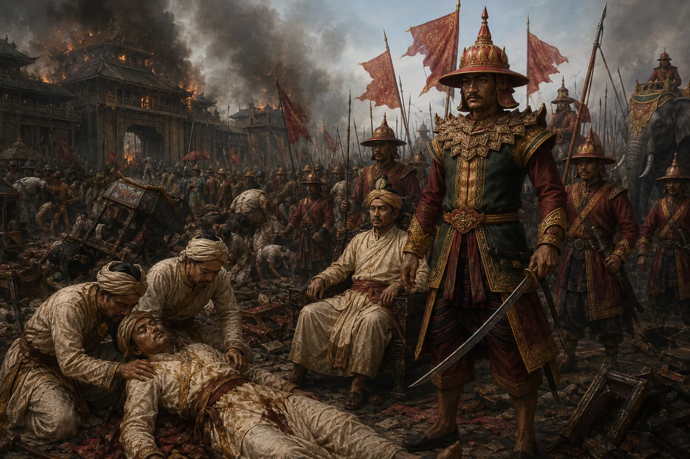

The First Burmese Invasion (Manor Din Begins)
March 1817 · The days of the Burmese

Badan Chandra brings a Burmese army of 16,000 soldiers across the Patkai; Purnananda dies of heartbreak; Burmese defeat Ahom troops at Ghiladhari and march on Jorhat.
Sources have not yet been catalogued for this record.
People: Badan Chandra Borphukan, Chandrakanta Singha (Sudingphaa), Purnananda Burhagohain